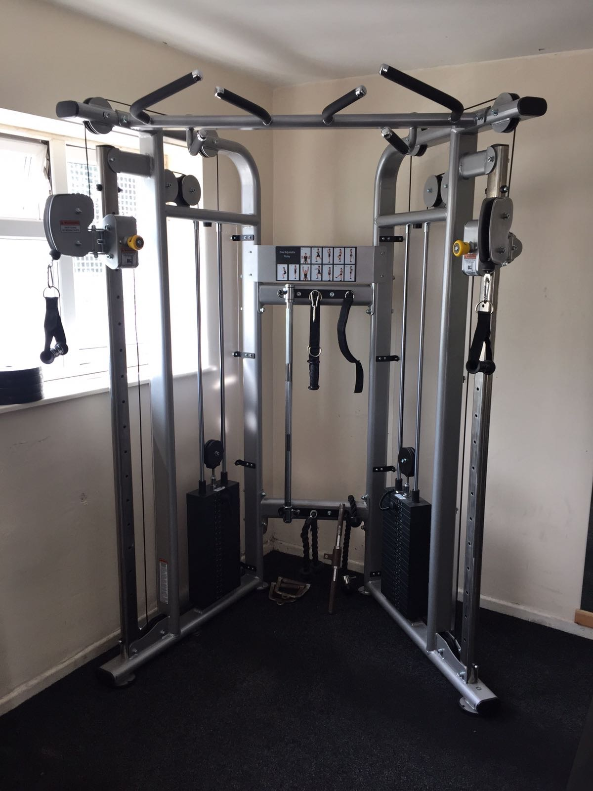

Ik train meestal drie spiergroepen per sessie, maar als je tijd tekort komt, kan je ook twee doen. Ik zou dan wel de combinatie rug-biceps, borst-triceps, en schouders-onderarmen aanhouden. Eventueel kan je er ook nog core of benen bij doen. Pak voldoende rust tussen de sets, minimaal een minuut. Voer elke oefening 4x uit, 10 herhalingen per keer of tot failure.
Ik behandel in dit schema oefeningen voor de volgende spiergroepen;
- Schouders
- Rug
- Biceps
- Onderarmen
- Borst
- Triceps
Dit is even een begin, ik breid de site later nog verder voor je uit met alternatieve oefeningen. Succes! Ps. voor het geval je niet weet wat een pulley is, dit is een pulley;


Schouders
Warm je schouders altijd goed op, je kan snel blessures oplopen bij deze
tere spiergroep. Til ook niet te zwaar.
1. Shoulder press:
Je kan deze zittend doen of staand. Zittend kan je wel meer kracht zetten en zwaarder tillen. Pak twee dumbbells of een kleine bar.2. Front raise:
Pak twee dumbbells en breng deze nu met gestrekte armen omhoog, tot schouderhoogte. Je polsen zijn omlaag gericht. Je gaat het voelen bij je rotator cuffs.3. Arnold Press:
Kan dit niet goed uitleggen, dus kijk het filmpje maar;4. Face pull:
Ga naar de pulley, bevestig een touw en neem een paar stappen naar achter. Zet de pulley op heuphoogte. Pak het touw met twee handen vast en trek het naar je gezicht toe. Je ellebogen moeten hoog blijven.Hij kan overigens ook met de pulley op de hoogste stand;
Rug
1. Seated Row:
Ga op het apparaat zitten met rechte rug en trek het gewicht naar je buik. Probeer niet te corrigeren, hou dus je rug recht tijdens de gehele oefening. 4x10 met één minuut rust tussen de sets.2. Bend over row:
Ga naar de pulley( apparatuur met kabels), bevestig een stang, touw of een curly bar, pak de stang beet. Neem een stap naar achter en leun voorover met rechte rug. Trek de stang naar je buik.3. Lat pulldown:
Hij kan het beter uitleggen dan mij; je kan trouwens in plaats van een stang ook een andere bevestiging pakken.4. Machine hammer row:
Biceps
1. Bicep curl:
Pak twee dumbbells naar keuze.2. Concentration curl:
Pak twee dumbbells naar keuze, pak een bankje. Ga zitten, pak de db op en leun met je elleboog op binnenkant been. Breng nu het gewicht omhoog.3. Pulley single curl:
Ga naar de pulley en haal alles van de haak. Zet de pulley op de laagste stand. Neem het balletje in je vuist, of bevestig een grip en voer gewoon een bicep curl uit.4. Hammer curl:
Dit is ongeveer hetzelfde als een bicep curl, alleen nu richt je je polsen naar binnen in plaats van naar boven.Onderarmen
1. Wrist curl:
Pak twee lichte dumbbells, leun met je ellebogen en onderarmen ergens op, bijvoorbeeld een bank, je polsen zijn van je af gericht. Beweeg nu je polsen naar beneden, herhaal dit 10x.Je kan het ook doen met alleen je ellebogen leunend ergens op, met je onderarmen recht naar boven gericht.
2. Reverse curl:
Je kan dit met een cable pulley of bar doen. Pak de bar of stang vast alsof je een bicep curl gaat doen, maar met een kleine aanpassing; richt je polsen naar beneden in plaats van naar boven. Pak de stang of bar vast, maar het liefst zonder je duimen. Gebruik alleenj je andere vingers om het vast te houden.3. Straight up forearm curl:
pak twee dumbbells of een bar en richt je polsen naar boven toe, strek je armen voor je uit en beweeg alleen je polsen zo ver mogelijk naar je toe. Herhaal dit 10x, 4 setjes.4. Straight up side forearm curl:
Dezelfde oefening als 3, maar dan met de dumbbells aan je zij.Borst
1. Bench press:
ga naar de bench, maak de stang nog niet te zwaar. Als je op de bank ligt, holle rug, borst naar voren, schouders naar elkaar. Til de stang op, breng hem naar je borst en duw weer schuin omhoog. De stang moet boven je ogen eindigen.2. Incline dumbbell chest press:
Ga naar een bankje en pak twee dumbbells naar keuze. Zet de bank op een incline(hoek), ga liggen en til de db's op. Leun ze even op je borst en stoot vervolgens krachtig uit.3. Landmine chest press:
Je kan dit staand, of op je knieen doen. Je hebt een stang nodig die in de grond is bevestigd met een houder die draait. Breng de punt van de stang bij het midden van je borst, met je handen eronder. Stoot krachtig uit en breng het weer terug op het beginpunt. Hou je lichaam kaarsrecht, span je core en billen aan.4. Incline dumbbells close bench press:
Pak weer twee dummbbells naar keuze, en pak een bankje.Triceps